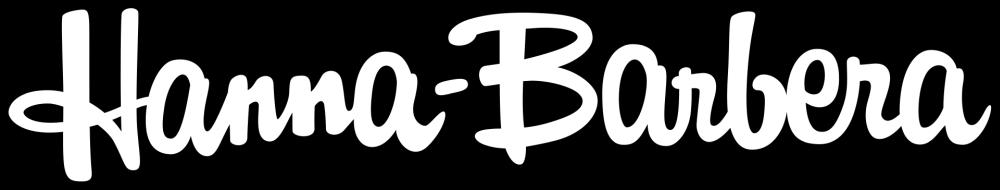

Hanna-Barbera Productions, Inc. simply known as Hanna-Barbera and also referred to as H-B Enterprises, H-B Production Company and Hanna-Barbera Cartoons, Inc., was an American animation studio founded in 1957 by Tom and Jerry (cat and mouse duo) creators and former Metro-Goldwyn-Mayer animation directors William Hanna and Joseph Barbera, in partnership with film director George Sidney.
For three decades in the 20th century, it was a prominent force and leader in American television animation as it created a variety of popular animated characters and a succession of cartoon series, including The Flintstones, The Yogi Bear Show, The Jetsons, Wacky Races, Scooby-Doo, Where Are You! and The Smurfs.
The cartoons won seven Oscars and eight Emmys, and in addition to this, Hanna and Barbera were awarded a star on the Hollywood Walk of Fame. Established as a successful company, the two men and Sidney sold it to Taft Broadcasting on December 29, 1966. By the mid-1980s, when the profitability of Saturday-morning cartoons was eclipsed by weekday afternoon syndication, Hanna-Barbera's fortunes had declined.
Turner Broadcasting System purchased the studio from Taft (by then renamed Great American Broadcasting) in late 1991 and used much of its back catalog as the foundation and programming for Cartoon Network and later Boomerang. After Turner purchased the company, Hanna and Barbera continued to serve as creative consultants and mentors.
The studio became a subsidiary of Warner Bros. Animation in 1996 following Turner's merger with Time Warner and was ultimately absorbed into Warner Bros. Animation in 2001, existing in name only. As of 2020, Warner Bros. continues to produce new animation based on Hanna-Barbera's catalog using the Hanna-Barbera brand name.
Films
Baxter! (1973)
C.H.O.M.P.S. (1979)
Charlotte's Web (1973)
GoBots: Battle of the Rock Lords (1986)
Heidi's Song (1982)
Hey There, It's Yogi Bear! (1964)
Jetsons: The Movie (1990)
Once Upon a Forest (1993)
The Flintstones (1994)
The Flintstones in Viva Rock Vegas (2000)
The Man Called Flintstone (1966)
Ultraman: The Adventure Begins (1987)
Series
A Pup Named Scooby-Doo (1988)
America vs. the World (1979)
Amigo and Friends (1979)
Bill & Ted's Excellent Adventures (1990)
Birdman and the Galaxy Trio (1967)
Butch Cassidy and the Sundance Kids (1973)
Capitol Critters (1992)
Captain Caveman and Son (1986)
Casper and the Angels (1979)
Cave Kids (1996)
CBS Storybreak (1985)
Challenge of the GoBots (1984)
Challenge of the Super Friends (1978)
Clue Club (1976)
Dastardly and Muttley in Their Flying Machines (1969)
Devlin (1974)
Dexter's Laboratory (1996)
Dink, the Little Dinosaur (1989)
Dino Boy in the Lost Valley (1966)
Drak Pack (1980)
Dumb and Dumber (1995)
Fantastic Four (1967)
Fantastic Max (1988)
Fish Police (1992)
Foofur (1986)
Frankenstein Jr. and The Impossibles (1966)
Fred Flintstone and Friends (1977)
Galtar and the Golden Lance (1985)
Go Go Globetrotters (1978)
Going Bananas (1984)
Goober and the Ghost Chasers (1973)
Gravedale High (1990)
Hanna–Barbera's World of Super Adventure (1980)
Harlem Globetrotters (1970)
Help!... It's the Hair Bear Bunch! (1971)
Hong Kong Phooey (1974)
I Am Weasel (1997)
Inch High, Private Eye (1973)
Jabberjaw (1976)
Jana of the Jungle (1978)
Jeannie (1973)
Johnny Bravo (1997)
Jokebook (1982)
Jonny Quest (1964)
Josie and the Pussycats (1970)
Josie and the Pussycats in Outer Space (1972)
Korg: 70,000 B.C. (1974)
Laurel and Hardy (1966)
Laverne & Shirley in the Army (1981)
Lucky Luke (1983)
Midnight Patrol: Adventures in the Dream Zone (1990)
Moby Dick and Mighty Mightor (1967)
Monster Tails (1990)
Mork & Mindy/Laverne & Shirley/Fonz Hour (1982)
Motormouse and Autocat (1969)
Mystery Island (1977)
Paddington Bear (1989)
Partridge Family 2200 A.D. (1974)
Paw Paws (1985)
Pink Panther and Sons (1984)
Popeye and Son (1987)
Pound Puppies (1986)
Prehistoric Popeye (1981)
Private Olive Oyl (1981)
Ricochet Rabbit & Droop-a-Long (1964)
Samson & Goliath (1967)
Scary Scooby Funnies (1984)
Scooby-Doo and Scrappy-Doo (1979)
Scooby-Doo, Where Are You! (1969)
Scooby's All-Star Laff-A-Lympics (1977)
Scooby's Mystery Funhouse (1985)
Sealab 2020 (1972)
Sergeant T.K. Yu (1979)
Shazzan (1967)
Shirt Tales (1982)
Sinbad Jr. and his Magic Belt (1965)
Skedaddle (1988)
Sky Commanders (1987)
Snorks (1984)
Space Ghost (1966)
Space Ghost and Dino Boy (1966)
Space Stars Finale (1981)
Speed Buggy (1973)
Super Friends (1973)
Super Friends: The Legendary Super Powers Show (1984)
Super Secret Secret Squirrel (1993)
SWAT Kats: The Radical Squadron (1993)
Taggart's Treasure (1976)
Teen Wolf (1986)
The 13 Ghosts of Scooby-Doo (1985)
The Abbott and Costello Cartoon Show (1967)
The Addams Family (1973)
The Addams Family (1992)
The Adventures of Don Coyote and Sancho Panda (1990)
The Adventures of Gulliver (1968)
The All New Popeye Hour (1978)
The All-New Super Friends Hour (1977)
The Amazing Chan and the Chan Clan (1972)
The Atom Ant/Secret Squirrel Show (1965)
The B.B. Beegle Show (1980)
The Banana Splits Adventure Hour (1968)
The Beach Girls (1977)
The Berenstain Bears (1985)
The Biskitts (1983)
The Completely Mental Misadventures of Ed Grimley (1988)
The Dukes (1983)
The Flintstone Comedy Hour (1972)
The Flintstone Comedy Show (1980)
The Flintstone Funnies (1982)
The Flintstones (1960)
The Fonz and the Happy Days Gang (1980)
The Funky Phantom (1971)
The Funny World of Fred and Bunni (1978)
The Funtastic World of Hanna-Barbera (1985)
The Further Adventures of SuperTed (1989)
The Galloping Ghost (1978)
The Gary Coleman Show (1982)
The Godzilla Power Hour (1978)
The Hanna-Barbera Happy Hour (1978)
The Hanna-Barbera New Cartoon Series (1962)
The Herculoids (1967)
The Huckleberry Hound Show (1960)
The Jetsons (1962)
The Kwicky Koala Show (1981)
The Magilla Gorilla Show (1964)
The Monchhichis/Little Rascals/Richie Rich Show (1983)
The New Adventures of Captain Planet (1990)
The New Adventures of Huckleberry Finn (1968)
The New Adventures of Jonny Quest (1986)
The New Fred and Barney Show (1979)
The New Scooby and Scrappy-Doo Show (1983)
The New Scooby-Doo Movies (1972)
The New Shmoo (1979)
The New Shmoo (1979)
The New Tom & Jerry/Grape Ape/Mumbly Show (1975)
The New Yogi Bear Show (1988)
The Pac-Man/Little Rascals/Richie Rich Show (1982)
The Pac-Man/Rubik, the Amazing Cube Hour (1983)
The Pebbles and Bamm-Bamm Show (1971)
The Perils of Penelope Pitstop (1969)
The Peter Potamus Show (1965)
The Pirates of Dark Water (1991)
The Popeye Sports Parade (1981)
The Powerpuff Girls (1998)
The Quick Draw McGraw Show (1960)
The Real Adventures of Jonny Quest (1996)
The Richie Rich/Scooby-Doo Show (1980)
The Roman Holidays (1972)
The Ruff and Reddy Show (1957)
The Scooby & Scrappy-Doo/Puppy Hour (1982)
The Scooby-Doo/Dynomutt Hour (1976)
The Smurfs (1981)
The Space Kidettes (1966)
The Super Globetrotters (1979)
The Super Powers Team: Galactic Guardians (1985)
The Thing (1979)
The World's Greatest Super Friends (1979)
The Yogi Bear Show (1960)
These Are the Days (1974)
Tom & Jerry Kids (1990)
Top Cat (1961)
Trollkins (1981)
Valley of the Dinosaurs (1974)
Wacky Races (1968)
Wait Till Your Father Gets Home (1972)
What a Cartoon! (1995)
Wheelie and the Chopper Bunch (1974)
Where's Huddles? (1970)
Wildfire (1986)
Yo Yogi! (1991)
Yogi's Gang (1973)
Yogi's Treasure Hunt (1985)
Young Robin Hood (1991)